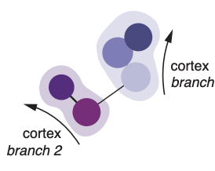
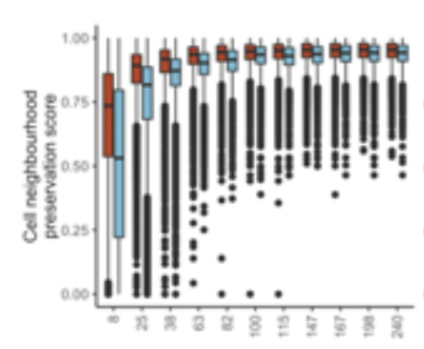
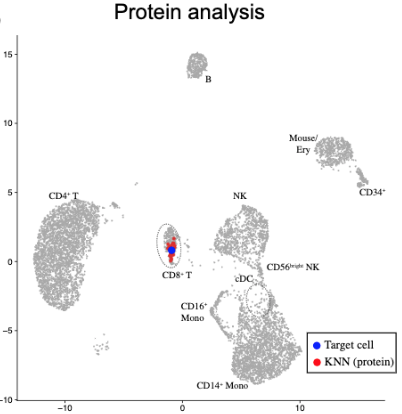
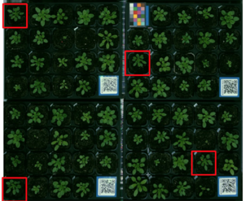

Publications
2022

An environmentally-responsive transcriptional state modulates cell identities during root development
Marina Oliva,
bioRxiv. 2022
2021

geneBasis: an iterative approach for unsupervised selection of targeted gene panels from scRNA-seq
Alsu Missarova, Jaison Jain, Andrew Butler, Shila Ghazanfar,
Genome Biology. 2021

Integrated analysis of multimodal single-cell data
Yuhan Hao*, Stephanie Hao*, Erica Andersen-Nissen,
William M Mauck, Shiwei Zheng, Andrew Butler, Maddie Jane Lee,
Aaron J Wilk, Charlotte Darby, Michael Zagar,
Paul Hoffman, Marlon Stoeckius, Efthymia Papalexi,
Eleni P Mimitou, Jaisin Jain, Avi Srivastava,
Cell. 2021
2019


2018
2016

* denotes equal contribution